AI Academy · Level 2 · Grade 7 · Week 31 · Student lesson
Permissions and Human Review
Learn to understand, design, build, test and explain AI systems responsibly.
Project: Transparent Book Recommender
Before you start
Week 30: a tool action has a defined permission scope.
Plan time to read, investigate and explain. Keep predictions separate from observations.
Student lesson · 1 of 16
Your mission
Your learning target
I can explain the mechanism and terminology of least privilege and tool scopes.
I can apply the stated procedure to a new case with a traceable result.
I can identify an assumption or limitation and design a revealing follow-up.
Remember before reading
Close your notes first. A rough first answer helps us choose the right starting point; it is not a score for your ability.
Without opening the old lesson, explain one key idea from Agents and Tools. Give an example and a mistake that the idea helps you avoid.
Without opening the old lesson, explain one key idea from Prompt Experiments. Give an example and a mistake that the idea helps you avoid.
Without opening the old lesson, explain one key idea from Text as Pieces. Give an example and a mistake that the idea helps you avoid.
After trying, check the relevant lesson or ask your teacher. Change the part of your explanation that the evidence shows was wrong.
Week 31: Permissions and Human Review
Higher-consequence actions need narrower permissions and approval.
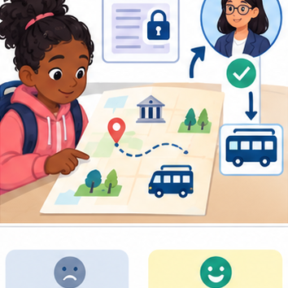
THINKER MISSION
Place approval gates in a field-trip planning workflow.
Thinker name and date:
Readiness for the connected explanation
Recall Authentication and authorisation. Explain why a recorded result needs its input conditions and evidence source before it can support a claim.
Readiness for Privacy and least privilege
Does a duration summary need student names to calculate a total?
This week’s end goal
By the end, I can enforce least privilege by checking operation and object before execution.
Student lesson · 2 of 16
Notice the evidence
PICTURE STORY
Notice → Predict → Explain
Begin with visible evidence. Do not explain more than the picture and information support.
MYSTERY
The learners must use permissions and human review to solve a problem. What information do they have? What decision or calculation do they make? What would count as evidence that it worked?
Three observations (what you can point to):
My prediction and the clue supporting it:
A closer explanation
Least privilege grants only capabilities required by the task. Tool access should include resource and operation scope, not merely a broad tool name.
Begin by writing the question the procedure is intended to answer. Identify the information already supplied, the information it will produce and the information still missing. These are constructed classroom examples; they do not require live accounts, private records or an external service. Do not treat a plausible explanation as a measured outcome.
Apply the connected idea: Privacy and least privilege
A fictional class activity dashboard needs category counts, not names or personal messages. Design its data and role permissions before collection. This exercise uses invented data and policy cards; do not change the Academy's actual authentication settings.
Student lesson · 3 of 16
See how it works
VISUAL MECHANISM
Input → Process → Output
Trace the information. At each stage, ask what changed and how you could test it.
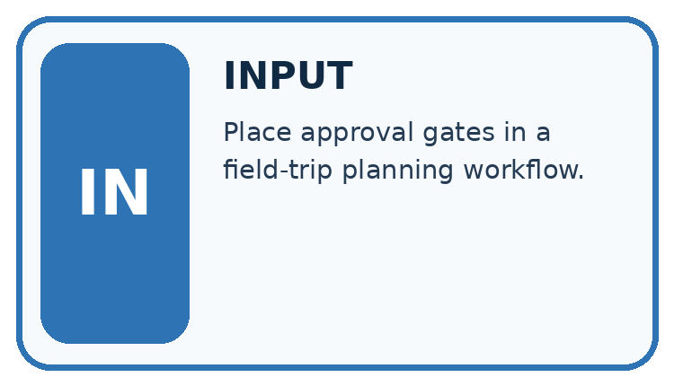
↓
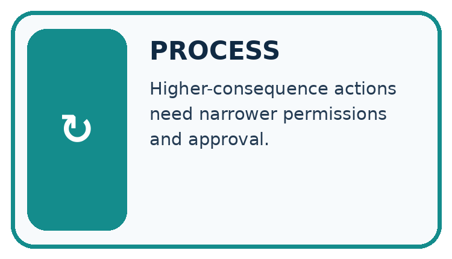
↓
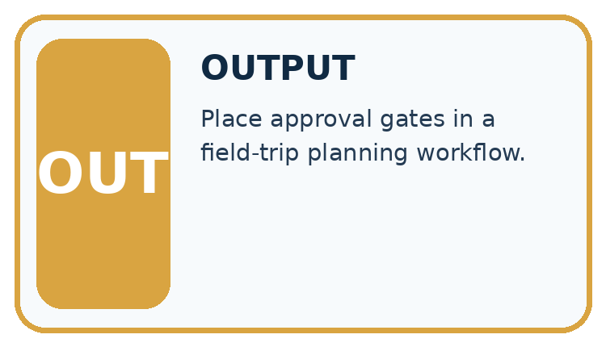
Which stage could fail even when the other two are correct? Explain:
A closer explanation
A reporting assistant may lookup public rooms but may not write records, send messages or read teacher notes. Check actor, operation and resource before executing a proposed call.
Least privilege and tool scopes — evidence trace
Before applying the procedure, write its units, denominator or decision boundary where relevant. A partner should be able to repeat each step using the same inputs. If a required input is absent or violates the stated contract, record that condition explicitly instead of quietly replacing it with a convenient value.
Apply the connected idea: Privacy and least privilege
roles = {"student": ["read_summary"],
"teacher": ["read_summary", "read_review"]}
def allowed(role, action):
return action in roles.get(role, [])
print(allowed("student", "read_summary"))
print(allowed("student", "read_review"))
print(allowed("unknown", "read_summary"))Follow the evidence
The toy code prints True, False, False. It models a permission decision, not a complete security system. A real server must verify identity and enforce authorization on every protected request; hiding a button in a page is insufficient.
Ask what each role actually needs
Least privilege means giving each role only the actions needed for its purpose. Read the policy as a table: students may read the approved summary, while teachers may also read the necessary review. An unknown role gets no listed action. The small function checks this table; it does not establish who a visitor is. In a real application, the server must verify the session and apply the permission check whenever protected data is requested.
Connect the picture and the explanation
Point to the input, the deciding step and the result in this week’s visual. Explain the same step in ordinary words. A picture helps when you can say what each part represents.
Student lesson · 4 of 16
Compare the cases
CASE GALLERY
Four Tests, Four Kinds of Evidence
A system is not understood until it survives more than one comfortable example.


NORMAL CASE: predict and name evidence. BOUNDARY CASE: predict and name evidence.


MISSING INFORMATION: predict and name evidence. TRANSFER CASE: predict and name evidence.
Which case is most likely to reveal a hidden assumption? Why?
Change one thing in the pictured case
Change: The helper says it needs write R5 to correct an apparent typo.
Prediction: The write remains denied under the existing token.
Reason: A useful purpose does not create an authorised operation; an authorised owner must review any scope change.
Student lesson · 5 of 16
Words that unlock the idea
VOCABULARY LAB
Words You Can Use to Reason
A definition matters when you can recognize the idea, use it, and contrast it with a near-miss.
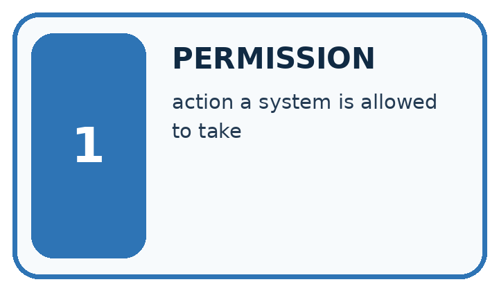
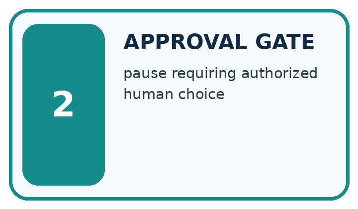
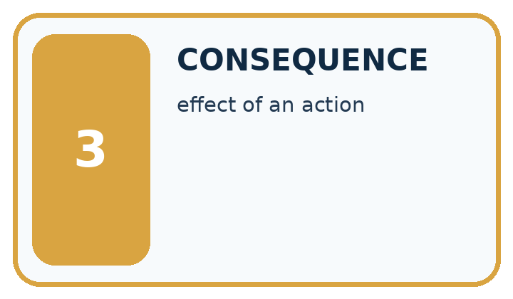
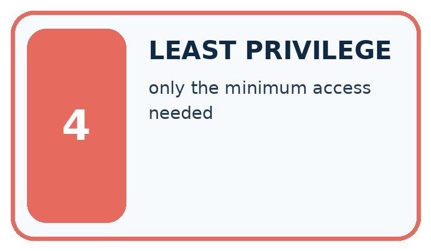
| Word | My own example | Not this / boundary |
|---|---|---|
| permission | Authorisation to perform a specified action on specified information or resources. | |
| approval gate | A point where a specified action must wait for explicit authorisation. | |
| consequence | An outcome or effect of a decision, including who benefits or is harmed. | |
| least privilege | Giving a user or system only the permissions needed for its authorised task. |
Words used in the closer explanation
| Word | Meaning |
|---|---|
| Capability | A scoped permission to perform an operation |
| Resource scope | The specific records an operation may address |
Terms for Privacy and least privilege
| Term | Meaning |
|---|---|
| Data minimization | Keeping only data needed for the stated purpose |
| Least privilege | Giving a role only the access it needs |
| Retention | How long data is kept |
| Authorization | Permission to perform a particular action |
Student lesson · 6 of 16
Follow a worked example
WORKED EVIDENCE
Reason Step by Step
Predict first. Then check each step. A correct answer without visible reasoning is incomplete evidence.
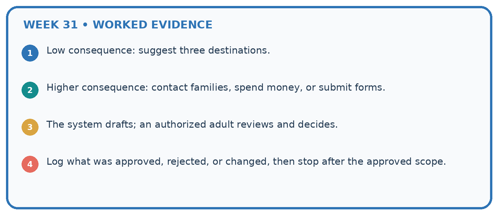
1. Low consequence: suggest three destinations.
2. Higher consequence: contact families, spend money, or submit forms.
3. The system drafts; an authorized adult reviews and decides.
4. Log what was approved, rejected, or changed, then stop after the approved scope.
Recalculate, retrace, or restate the reasoning in your own representation:
CHECK Did the evidence answer the exact question? Did the total, path, or source record stay consistent?
A closer explanation
Tool token permits lookup(public-room). A proposed call writes teacher notes.
Both operation and resource exceed scope; deny before execution, regardless of generated confidence.
Compare the intermediate evidence with the final statement. Explain why each number or decision follows from the stated inputs. The conclusion belongs to this scenario and procedure; changing the inputs, evaluation population or authority can change what it establishes. Retain the raw record so a later revision can be compared honestly.
Apply the connected idea: Privacy and least privilege
Learn from the worked case
Cover the result before checking it. Say what is given, choose the procedure, and follow one step at a time. Then uncover the result and explain your first mismatch. Ask why a step is allowed, not only what number it produces.
A pictorial worked case: Permissions and Human Review
A fictional catalogue helper receives a narrowly scoped tool token.
The facts we will use
Token allows read on catalogue records R2 and R5 only. No write permission is granted.
Proposals: read R2; read R8; write R5. Generated text claims all are helpful.

Read the picture one step at a time
Why this result follows
Permissions are concrete restrictions, not a confidence score or a general instruction to be useful. Each proposed call must match both dimensions before it happens. A request written inside catalogue text cannot enlarge the token’s authority. Denial should preserve the proposed action and reason without executing the disallowed mutation.
What this example does not establish
Permission checks do not establish that a read result is trustworthy or that an allowed action is factually correct.
Read the labelled picture: Which proposal is allowed, and why is an authorised object alone insufficient?
Change one thing: The helper says it needs write R5 to correct an apparent typo. Predict the result before checking the explanation. What remains the same?
Student lesson · 7 of 16
Find and repair a mistake
ERROR DETECTIVE
Compare → Diagnose → Repair
Do not patch the answer. Find the earliest unsupported assumption, wrong step, or weak evidence.
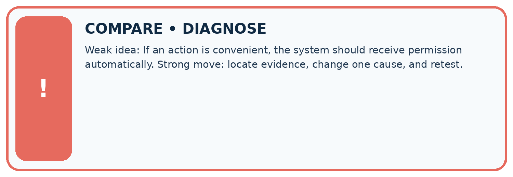
| Evidence record | Expected | Actual | Likely cause / next test |
|---|---|---|---|
| normal case | works | ||
| boundary case | stated rule | ||
| missing input | safe response | ||
| fresh transfer | generalizes |
Repair one cause. Why is this repair better than changing several things?
A closer explanation
Complete the supported workbook tasks before attempting W4 independently. Record any hints or help used. After feedback, use the teacher's fresh retry rather than copying the earlier answer. For a project, select a relevant new case, predict the outcome from the declared rule and preserve the result alongside any revision.
Apply the connected idea: Privacy and least privilege
Retention must be tied to a purpose and school policy rather than a guessed universal number of days. Identify who can correct or delete records and avoid keeping raw responses indefinitely just because storage is available.
Student lesson · 8 of 16
Practise together
LOGIC STUDIO
Trace Before You Run
Block code, pseudocode, tables, and diagrams are different ways to expose the same reasoning.

SET evidence_record PREDICT expected_result RUN one normal case and one boundary case COMPARE actual_result with expected_result IF different: locate first cause; change one factor; RETEST EXPLAIN result, limitation, and next safe step
Trace one input. Which line changes the state or chooses a path?
A closer explanation
A generated plan cannot expand the token or actor scope.
A useful check asks what would make the reasoning fail. Distinguish a failure to execute the declared procedure from a weakness in the procedure itself. The first may require a correction; the second requires an explicitly revised method and new evidence. Preserve unsuccessful cases so an improved result cannot hide the original problem.
Apply the connected idea: Privacy and least privilege
A form asks for names, birthdays and comments to count activity preferences. Remove fields not needed for the purpose. Aggregated counts can still expose information in very small groups; choose reporting rules with the responsible teacher.
Practise with less help: Trace the worked case
Use workbook W2 for the connected example “Least privilege and tool scopes”. First fill the input and rule boxes. Try the middle steps before asking for a hint. After a hint, try the next step yourself.
| Plan | Do | Check |
|---|---|---|
| What is given? Which rule or procedure applies? | Record each intermediate step. | Does the result follow? What remains unknown? |
Explain your trace to a partner. Your partner points to one step to check. Swap roles on the next case. Each person writes their own explanation.
Check your reasoning
Use the worked case for Least privilege and tool scopes. Proposed explanation: “The worked result establishes every future case”. Decide whether this explanation is supported. Point to the step or supplied fact that decides; explain your repair if needed.
Answer on your own before discussion. If you are unsure, say which step you need help with.
Practise the connected topic: Privacy and least privilege
Use its named workbook W2. Identify the given inputs, try the middle steps with less help, then explain your trace. Check this claim before group discussion: A successful run proves the conclusion
Explain the picture
Which proposal is allowed, and why is an authorised object alone insufficient?
This is supported practice. Keep the separately named independent case for an attempt before feedback.
Student lesson · 9 of 16
Run the investigation
EVIDENCE LAB
Predict → Test → Record → Explain
Keep expected and actual results separate. Surprises are useful data when recorded honestly.
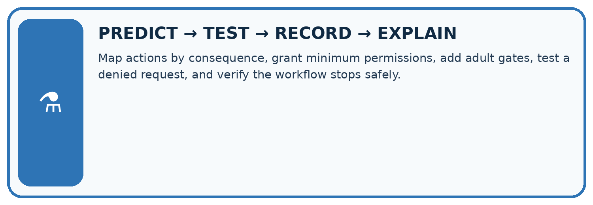
Map actions by consequence, grant minimum permissions, add adult gates, test a denied request, and verify the workflow stops safely.
| Test / input | Prediction | Actual | Evidence / calculation | Change or keep? |
|---|---|---|---|---|
| normal | ||||
| boundary | ||||
| missing | ||||
| fresh transfer |
What did the hardest test teach you that the normal test did not?
Plan → try → check
Before trying: what do I expect, and why? While trying: which step could first go wrong? Afterwards: what did I actually observe, and what should change? Keep “not run” if you only traced the procedure.
Student lesson · 10 of 16
Build your understanding
MASTERY
From Knowing the Word to Owning the Idea
Move upward only when you can produce evidence without copying the worked example.

1 • NAME: Define the concept without repeating the textbook.
2 • TRACE: Show the information, state, branch, calculation, or evidence path.
3 • APPLY: Solve a different example independently.
4 • CHALLENGE: Find a boundary case, counterexample, or unfair outcome.
5 • EXPLAIN LIMITS: Say when the result should not be trusted or used alone.
My strongest evidence of independent understanding:
Student lesson · 11 of 16
Connect your project
CUMULATIVE PROJECT
Transparent Book Recommender
Every week adds one inspectable piece. The system must show how it reached a result.
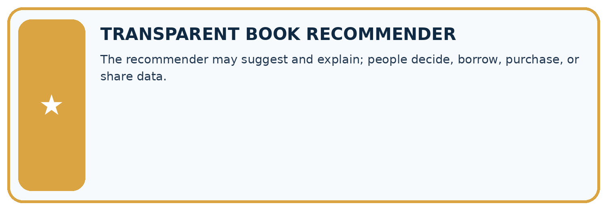
THIS WEEK’S CHECKPOINT The recommender may suggest and explain; people decide, borrow, purchase, or share data.
SYSTEM MAP Reader need → allowed inputs → transparent rule or score → ranked candidates → explanation → test record → human decision
What will you add, change, or verify in the project this week?
What should remain under human control?
RESPONSIBLE DESIGN Collect only necessary information. Show uncertainty and limits. Never confuse a ranking with a fact about a person.
Evidence for your project
Give the recommender read-only access wherever sufficient, and require explicit owner review for catalogue edits or publication.
Student lesson · 12 of 16
Show what you know
INDEPENDENT MASTERY PROOF
Explain • Transfer • Test • Defend
Complete this page without copying the worked example. Your reasoning matters more than decoration.
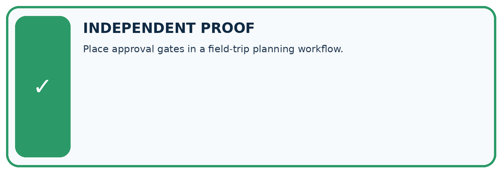
CHALLENGE Place approval gates in a field-trip planning workflow.
1. My fresh example, trace, calculation, or design:
2. My evidence that it works (include a boundary or missing-data case):
3. One limitation, fairness concern, or situation needing human review:
SELF-CHECK □ I explained the mechanism □ I used evidence □ I tested a fresh case □ I named a limitation □ I can answer ‘why?’
Student lesson · 13 of 16
Study a complete case
Week 31 Worked case
Use the supplied details to practise the weekly concept before attempting the independent question. This case extends the illustrated lesson.
The situation
Posting a recommendation requires teacher review.
The question
Place the approval gate.
Worked explanation
After draft and evidence are visible, before posting; include content and destination. No approval means no post.
Explain it in your own words
Which detail supports the answer, and why does it matter?
Trace the supplied case visually
Put approval after evidence and before action
| Evidence or stage | Value or result |
|---|---|
| Draft | Show recommendation content |
| Evidence | Show support and destination |
| Teacher | Review and explicitly approve |
| Post | Proceed only with approval |
Posting a recommendation requires teacher review.
Place the approval gate.
After draft and evidence are visible, before posting; include content and destination. No approval means no post.
Student lesson · 14 of 16
Try a new case independently
Independent case: Apply a new case independently
Scope allows read inventory items A, B. Calls read A, read C, write B. Decide.
Attempt this case before feedback. Record any help. Earlier examples below are further practice; a case already practised with feedback cannot establish fresh transfer.
Week 31 Independent application
Close the worked explanation. Apply the idea to this different question without copying.
A teacher allows a tool to draft a message but forbids sending. The draft is correct. May the agent send it? Explain the boundary.
My answer, with a trace, calculation or supporting evidence
Create and test
Change one relevant detail. Predict the result before testing. Include a boundary or missing-information case when it helps reveal a limit.
My changed input and expected result
Connect to your project
The recommender may suggest and explain; people decide, borrow, purchase, or share data.
The evidence I will keep
Your teacher has the independent answer and scoring criteria. Complete the matching workbook week to keep your practice evidence together.
Transfer practice from the original programme
A teacher approves posting version 1 to a class board. The assistant changes the text and destination to a public board. Does the old approval cover the new action? Define what must be reviewed.
Use feedback to improve
Attempt the independent case before hints. Record whether you worked alone, used a hint or followed a model. After feedback, fix the first unsupported step and explain why it changed. A later check uses a changed case, not a copied answer.
Student lesson · 15 of 16
Your lesson route
Start with this question: A fictional catalogue helper receives a narrowly scoped tool token.
| By the end, I can | How I will show it |
|---|---|
| Explain the mechanism and terminology of least privilege and tool scopes | Explain the deciding step, show a trace or test, and state one limit. |
| Apply the stated procedure to a new case with a traceable result | Explain the deciding step, show a trace or test, and state one limit. |
| Identify an assumption or limitation and design a revealing follow-up | Explain the deciding step, show a trace or test, and state one limit. |
Remember → watch and explain → try with help → investigate → try independently → keep project evidence. Your teacher may spread this lesson across several classes.
Keep your first prediction. Compare it with what the evidence shows and explain any change.
Student lesson · 16 of 16
Finish and return
Close your notes. Explain this goal in your own words: Explain the mechanism and terminology of least privilege and tool scopes
If you are unsure, return to the worked picture and explain one arrow. If you are ready, change an input or assumption and justify your prediction.
Save your workbook evidence. At the next review, try a different case before opening your old answer.